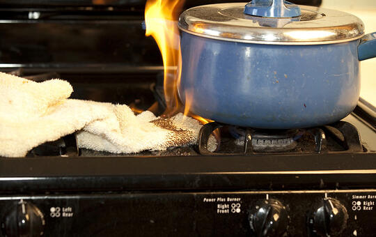
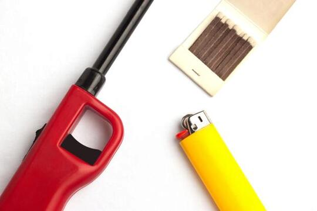
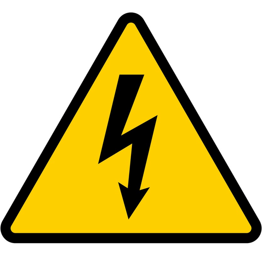

| FIRE PREVENTION TIPS: 101 | |
| Cook Carefully  |
Keep cooking areas clear of combustibles and wear clothes with short sleeves when you cook. Turn pot handles inward on the stove, where you can’t bump them and children can’t grab them. Never leave cooking unattended. |
| Matches and Lighters are Tools Not Toys  |
Teach your children that matches and lighters are tools, not toys, and should be used only by adults or with adult Teach small children to tell an adult if they find matches or lighters; older children should bring matches and lighters to an adult immediately. |
| Use Electricity Safely  |
If an electric appliance smokes or has an unusual smell, unplug it immediately, then have it serviced before using it again. Replace any electrical cord that is cracked or frayed. Don’t overload extension cords or run them under rugs. Don’t tamper with your fuse box or use improper-sized fuses. |